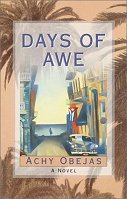

BOOK REVIEW
A Refugee's Emotional,
Ethnic Awakening in Her Native Cuba
DAYS OF AWE
By Achy Obejas
Ballantine $24.95, 384 pages
By PAULA FRIEDMAN,
SPECIAL TO THE TIMES
Two years after the
revolution, Cubans began leaving the island on anything that would
float--less terrified of Castro's communism, novelist Achy Obejas
intimates in "Days of Awe," than they were of the persistent rumors
that an invasion and a terrible war would follow. As Obejas' narrator,
Alejandra explains it, Cubans feared that their country would be besieged
by "another one of those bloody skirmishes the U.S. periodically undertook
in Latin America." With much sadness, but little hesitation, Alejandra's
parents shipped out in April of 1961 with their 2-year-old daughter
in tow, stopping first in Miami, but finally settling in Chicago,
where Lake Michigan provides the family with a bit of watery solace
that reminds them of their homeland. As Alejandra grows up, she begins
to grasp her parents' passionate attachment to their home country,
learning as well about their all-but-dormant Jewish roots. Obejas
takes the novel's title from the English translation of the Hebrew
"Yamim Nora'im," the time between Rosh Hashana and Yom Kippur, those
religious "days of awe." But Obejas wisely holds back this explanation
until late in the novel after the reader has ample time to absorb
the process of awakening that Alejandra undergoes about her own nationality
and faith. While both her parents, Nena and Enrique, were born to
Jewish families, neither was raised Jewish. Both of their families
had turned from their Jewishness as anti-Semitism swept Cuba during
and after World War II. Later, in Castro's Cuba, it was simply better
to claim no religious faith at all.
An interpreter and
oral translator, Alejandra makes her first trip back to Cuba in 1987
for professional reasons, working for a group of progressive Chicago
politicians and activists. But her parents' response to her travel
plans leaves her unsettled: "My parents are not fanatical refugees,
they do not assume everything about the revolution is hideous. As
much as they may be alienated in the U.S., they've made peace with
the difficult decision to leave Cuba. Yet, when I said I was going
back to the island, they paused as if they needed a moment to adjust
their antennas, to rearrange their sense of disbelief into something
coherent and civil. Then they kicked into exile-style paranoia.
"'Be careful--don't
talk to just anyone,' my mother warned me about my upcoming visit.
'You will get them into trouble if you talk to them.' ... 'You could
get yourself in trouble,' my father said. 'You could wind up in jail."'
Waiting to go through
processing in the Havana airport, Alejandra realizes that she hadn't
been entirely honest with herself about her reasons for visiting Cuba.
The truth was that this trip marked for her a "return to the Land
of Oz" she'd conjured in her dreams. With subtlety and grace, Obejas
depicts Alejandra's intensifying awareness of her own identity, as
a Cuban, a Jew and a woman.
Visiting
family and friends, Alejandra encounters a range of attitudes about
Castro's revolution, with some believing the man no more than a scoundrel,
and others seeing him as merely a flawed revolutionary. Given her
own parents' fear of the government, Alejandra is surprised to find
the various ways in which Cubans have made peace with their lives
under Castro. It would be easier for her to let go of her homeland
and return to America, the land where she was raised, she muses, if
she could see the world in blacks and whites.
Through Moises Menach,
Enrique's childhood pal, Alejandra learns about the complexities of
life in modern Cuba, and she also learns about her parents' ambivalent
ties to their own Jewishness. Obejas has created a true wise man in
Moises, a man who possesses vision, compassion and the fortitude to
carry on, despite hardship.
With Moises' son-in-law
Orlando (permanently separated from his wife, Angela), Alejandra experiences
a profound erotic awakening, feeling herself deeply in love for perhaps
the first time in her life. Obejas masterfully links identity with
place, language and the erotic life, without ever descending into
sentimentality.
Her descriptions render
her characters' emotional lives with a precision that precludes exotic
stereotyping. But the novel yields further delights, as Obejas allows
Alejandra to meditate on the cultural and philosophical differences
reflected in language.
We learn, for example,
that in Spanish, it is simply not possible to speak of love for an
object with the same word used to speak of human love. This focus
on language accounts for one of the novel's most enchanting riches,
revealing a capacity to neatly articulate in Spanish the concepts
that English and other languages have no words for.
Copyright 2001 Los
Angeles Times
Amazon.com